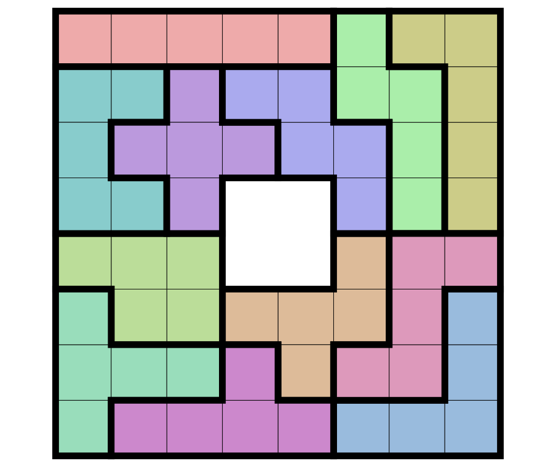

Background information
Puzzle description
The Pentomino puzzle is a classic puzzle game. Pentomino pieces are each made of five squares connected to each other (like a "domino" is two squares connected to each other). There are 12 different pentomino pieces. Schematically, here are the shapes, along with the label we are assigning to each shape for the purposes of this exam:
-
Shape F:
-
Shape I:
-
Shape L:
-
Shape N:
-
Shape P:
-
Shape T:
-
Shape U:
-
Shape V (not L!):
-
Shape W:
-
Shape X:
-
Shape Y:
-
Shape Z:
In these diagrams,
the Xs represent the squares that are part of the shape;
the .s are just part of the underlying board,
given to make it clear what the exact shape is.
As you can see, each of the shapes consists of exactly 5 squares,
all connected to each other.
The goal of a Pentomino puzzle is to place the shapes together so that they fill up a rectangular grid (we say that the pieces "tile" the grid). Pieces are not allowed to overlap on the grid (they can't cover the same locations). Pieces can, however, be rotated or reflected; this is because the puzzle originally was a physical puzzle using wooden pieces that could be rotated or flipped around. (You can still buy these puzzles; here is an example.)
Grids are allowed to have specific squares which should not be occupied. All of the shapes combined can be used to fill up a 5x12 grid, a 6x10 grid, or some subset of the shapes can be used to fill up smaller grids. In some puzzles, pieces can be duplicated, in which case you use lower-case and upper-case letters to distinguish them in the solutions. (We won't be looking at puzzles that have more than two copies of any piece). If each piece is used exactly once, it can fill up a grid of area 60, or even a larger grid if holes are allowed. For example, this picture shows a tiling of the 8x8 grid with four empty squares in the middle:

The goal of the program you will be writing will be to automatically find solutions given particular grid dimensions, specified hole locations (for some grids) and a specified set of pentomino pieces to use. (Not all grids will use all pieces.) Note that some grid dimensions and/or piece sets may not result in a solution. (For instance, there is no way to find a solution using any of the pieces for a 1x2 grid, since no pieces can fit in that grid.)
When printing a solution, we use the piece labels to indicate where the piece is in the solution. (We use lower-case letters unless a piece is duplicated, in which case we use both lower- and upper-case letters for that piece.)
For instance, one solution to the 5x12 puzzle using all the pieces is as follows:
Notice that adjacent locations with the same letter are part of the same piece. This is also the way your program will display solutions.
As mentioned above, shapes are allowed to be rotated and/or reflected when placing them into the grid. In addition, in many cases, a puzzle will have multiple solutions. (Just rotating a solution of the 8x8 grid with the 2x2 hole in the center will give three more "solutions".)
Outline of the solution algorithm
We will be solving the Pentomino problem in a somewhat roundabout way. First, we will convert a description of a given Pentomino problem into a sparse binary matrix i.e. a matrix whose elements are either 0s or 1s, but mostly 0s. What the binary matrix signifies will be discussed in detail below. Then we will apply an algorithm to the binary matrix which will select a subset of the rows of the matrix, forming a submatrix. This submatrix will have the property that every column will have exactly one 1 and all the rest of the column values will be zeroes. Once we have this subset, we will map it back to the Pentomino problem to get the solution.
The algorithm to find subsets of rows of binary matrices can be used for much more than just the Pentomino problem. For instance, Sudoku problems can also be translated into the same kind of binary matrix representation. The technical name for this kind of problem is the "exact cover" problem (see the Wikipedia entry). The specific algorithm we will use to solve this problem is called "Algorithm X" and was described by Donald Knuth (see the Wikipedia entry here). Even though the algorithm we will use is the same as Knuth's algorithm at a high level, the details are very different; Knuth used a method he called "dancing links" which is an imperative algorithm1
In part A, you will write functions to manipulate binary matrices. In part B, you will write a solver for exact cover problems expressed as binary matrices. In part C, you will write functions to convert Pentomino problems to binary matrices. The supplied code will tie all this together, allowing you to solve arbitrary Pentomino problems on rectangular grids.
Running the pentomino_solve program
Ultimately,
if you do everything right you will be able to compile and run
a program called pentomino_solve.
This program will be able to solve specific Pentomino problems
(whose definition is encoded into the program).
There are 13 Pentomino problems we've encoded;
they are selected by number (0 up to and including 12).
All are solvable.
To run the program, just give it the number of the problem:
$ ./pentomino_solve 3
tyyyy
tttyl
tllll
$ ./pentomino_solve 4
ppuuu
ppufu
lpfff
llllf
$ ./pentomino_solve 5
llxuutttpppy
lxxxuvtwppyy
lfxuuvtwwzzy
lffvvvnnwwzy
ffiiiiinnnzz
$ ./pentomino_solve 9
llxuuvvv
lxxxuvzz
lfxuuvzn
lff zzn
ffy wnn
yyyywwnt
pppwwttt
ppiiiiit
This shows the solution for puzzles number 3, 4, 5, and 9. Puzzle 9 is the 8x8 grid with the 2x2 hole in the middle we saw above. (Notice that it's not the same solution.)
Our code can solve these problems generally taking no more than 2 seconds per problem, though occasionally it takes a bit longer. Your code doesn't have to be that efficient, but if it takes much longer (say, more than 15 seconds for one problem) you are probably doing something wrong, or at least very inefficiently. We will take marks off for very inefficient solutions (more than 15 seconds on a problem).
We recommend that you concentrate on making your code pass the test scripts
for the individual modules we describe below.
Only try the pentomino_solve program after all the test scripts pass.
Once they do, run the run_solutions.sh shell script,
which will generate solutions for all the 13 puzzles we encoded.
You should consider this the final test of your program.
-
Actually, it's one of the most imperative algorithms we have ever encountered, featuring quadruply-linked doubly-circular lists, whereas our solution will be purely functional. If you are curious, you can download Knuth's dancing links paper here. Knuth's papers are incredibly dense but invariably contain many fascinating insights. ↩